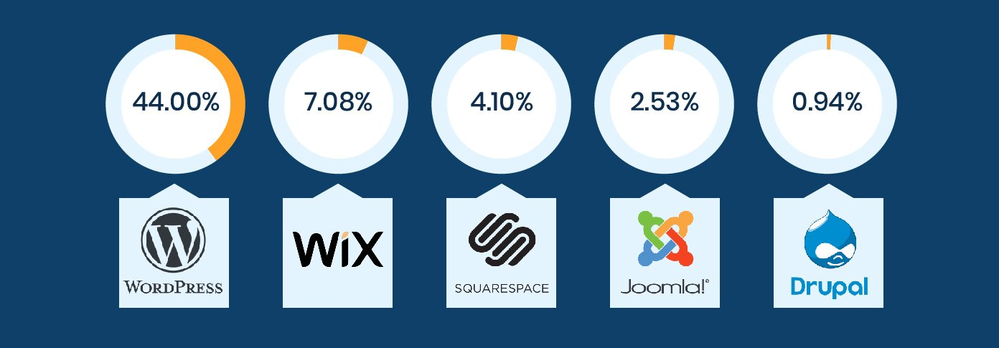

The guide is very detailed, yet very easy to follow - even if you’re not very technical.
It is Upto Date
Other guides can be outdated or misleading. This is updated as on Aug 2021.
Platform Specific
We'll use WordPress (free). Your website will be set up the right way on the right platform for what you need.
CREATE YOUR OWN WEBSITES AND LANDING PAGE
Three simple steps to create your website
You'll learn how ......
Step #1: Choose Your Website Platform
In order to build a website, you first got to decide what platform you’re going to build your website
What do I mean by “platform”?
Well, back in 2005 when I got started with web development, most sites were created using HTML (code), CSS, and PHP. Each of these took a lot of time to learn and were difficult to master.
That’s why most people still think setting up a website from scratch is difficult or requires a lot of coding and design skills – but that’s no longer true.
In 2021, content management systems (CMS) like WordPress have made creating a website accessible to everyone.
To put it simply, a CMS (or website building platform) is a user-friendly platform for building websites and managing your own online content, instead of creating a website from scratch using HTML, PHP, and other coding languages.
Popular Site Building Platforms in 2021

Step #2: Find a Domain Name and Host.
In order to get a new website online, there are two things that you’re going to need:
A domain name (a web address like yoursitename.com)
Website Hosting (a service that connects your site to the internet)
Step #3:Set your website and designing .
Congratulations! You’re now the proud owner of a new website.
Create your Landing Page
A landing page plays a critical role in converting visitors into leads or potential customers.
It gives the website visitors the direct information about what needs to be done and why they should do it.
Website homepages are a great platform for the direct traffic but when you can control that traffic, you must send it to your landing page as it has all the relevant information about your specific products and your brand.
However, to leverage this traffic, you must first learn how to create a perfect landing page.
Here are the Step-by-step checklist for creating your own landing page:
Complete your meta description, title and publish!
Expert tip: One of the greatest advantages of landing pages is that they are relatively easy to make. This means that you can create more than one landing page and test the performance of multiple designs, using A/B tests .
This technique will take your online marketing to a much more professional level. It can teach you a lot about your target audience and help you focus your messaging in the future.
Take a look at this article for more landing page best practices. For additional in-depth tips, download the free checklist here: